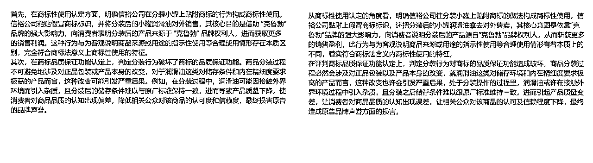

来源：https://strczxjzdj.feishu.cn/docx/AaezdWaEWo0OSYxCzMJcQUJrnSh
你好，我是陈bu懂。
名字的由来其实很简单，意义也十分简单：“不懂就要学。”
这名字就是时刻提醒自己：保持学习的状态，永远不要停止往脑子里装东西。 世界这么大，机会这么多，唯一限制我的从来不是环境，而是我自己。
“不懂就要学。”是我为自己立下的规矩。无论在什么领域，只有不断地学习才能不断地进步。
这个名字不仅仅是个网名，它其实更像一种态度，一种时刻提醒自己别再混日子，别再摆烂的态度。
生活不容易，摆烂更没有出路，唯有不断学习、不断成长，才能真正改变命运。
我叫陈bu懂，但我正在学会。
久违啦，朋友们！
这大半年我是真的忙到飞起，几乎没时间静下心来，写一篇真正对你们有实操价值的内容。不过也正是在这段时间里，我自己测试跑通了不少品类，现在正一个个放大布局。
今天想和你们聊的，是我这一年来反复验证过的一个经验——
判断一个项目好不好，其实很简单：
如果一个你觉得“没那么聪明的人”，都能在这个赛道上快速赚到钱，那它就是真正的好项目！
说白了，就是那种门槛低、闭环快、赚钱路径清晰的小项目。
而我今天要分享的这个AI写作类目，就完美符合这个标准——它就是：“降重 / 降AIGC”。
这个品类几乎不需要你有多强的写作能力、也不需要你搞懂什么复杂的增长逻辑，只要照流程干，就能接单赚钱。甚至可以说，这是一个“闭眼都能做”的项目。当然，降重降AIGC会有季节性波动，基本上每年3-6月份，是需求最旺盛的时候！
别说写文章了，我把这套玩法单独拆出来，拿去做课程卖个几百上千都有人买单的。
但在这里，我还是决定——直接分享给大家。
为了让你们更快上手这个小闭环项目，我建议先去看一下我整理的 ，简单几分钟内容，能帮你把视角和理解力拉到一个更高的起点，认知先对，后面的实操才好落地！
“降重”是内容创作者、学术写作者和文案工作者常会接触的一个词，全称是“降低重复率”或“降低查重率”。简单说，就是让原本重复率较高的文字变得更“原创”，从而不被查重系统或平台认为是抄袭或重复内容。
这个季节属于全国大学毕业生毕业季，所有专升本、专科、本科、研究生、博士毕业生都会被要求写LW或者BS，而这两个东西，在这个项目中的“降重”主要针对学生群体的LW和BS进行降重
不同场景下，降重的标准不同，因为查重系统也不一样，比如：
付费网站：知网、维普、格子达、Turnitin 等；
免费网站：PaperPass等
每个系统的识别逻辑不同，但大致都能识别原句改动不大、关键词堆砌、语序调整但逻辑雷同的内容。
很多内容平台（如微信公众号、知乎、小红书、简书、TikTok、YouTube等）都有原创内容激励机制，但同时也在检测AI生成的内容。AI痕迹太重可能：被限流、不予推荐、被判定为“非原创”、影响账号权重或收益。
有些甲方或编辑不想要AI写的稿子，他们要“原创手打感”的内容。如果你接单交稿时AI痕迹明显，容易被打回，甚至丢单。
学术论文如果被识别为AI生成，可能被判为学术不端。国外高校已经在大规模检测AIGC内容。
谷歌、必应等搜索引擎虽然不完全禁止AI内容，但会打压“无深度、无独特价值”的AIGC内容。所以“AI痕迹太重”的内容排名会很差。
后面只针对上文提到的学术查重中的LW和BS做更详细的介绍
要“降AIGC”，首先要知道什么是“AI痕迹”。AI写出来的东西，经常有这些通病：
| 降AIGC的核心就是：掩盖机器感，还原人性化表达。
简单理解就是：不要写得太标准、多加点自己味、加点细节（情绪、观点）、写得像个“人”就对了
一些课前认知讲清楚了，接下来开始实操环节
在之前的认知小课里我已经提过，做降重/降AIGC，你首先要解决的不是怎么写、怎么降，而是：谁会来找你？
明确客户群体非常重要：
那怎么找到这些客户？这里我给大家分享几种特别适合小白操作的获客方式，都是我实测有效的：
如果你是纯小白，我强烈建议你从闲鱼开始。门槛低、操作简单、流量稳定，是目前最适合新人切入的平台。
你需要做的就是：
详细的操作流程我已经写过一篇超系统的教程——
建议认真看一遍，照做就能跑起来（内容有1w多字，非常适合小白）
参考同行：
小红书也是一个降重需求非常集中的平台！
两种打法：
你可以直接搜索“小红书 降重 AIGC”看看热度，顺便学习下优秀同行的写法和结构。
自热参考同行：
截流参考：
抖音虽然门槛相对高一点，但你不需要起号，只做“精准截流”就行。
这招不一定起飞，但放着不做，真的可惜。
获取客户 = 找准平台 + 找对关键词 + 学会“模仿”+ 多铺路！
下一步，我们就开始讲如何接到客户后，高效转化成交！
无论你是拍短视频、写笔记，还是在各大平台冲流量，我们最终的目的只有一个——把客户引到私域，完成转化！
为什么要这么做？因为私域就像你精心布置的小店，有你的人设、案例、朋友圈、沟通话术……客户一进来，看到的就是专业可信四个大字。
那么，当一个降重/降AIGC类客户加到你的微信之后，我们该如何顺利把他从“路人”变成“下单客户”？
客户一加你微信，第一时间做什么？翻朋友圈！
朋友圈就像你的“橱窗陈列”，如果里面摆满了真实案例、客户好评、项目展示，他自然会觉得：“这人专业，靠谱！”
除此之外，微信人设也要“立”起来——比如你可以打造一个“兼职接单、稳定靠谱、工作能力强”的形象，男生/女生可以用“温柔认真接单小姐姐”的标签。
一句话总结：第一印象决定客户愿不愿意认真跟你谈单。
在前面闲鱼教程里面结尾有一个简单的私域营造，大家可以去看看。当然，想做得更好，最简单的方式是——去看同行是怎么做的，借鉴学习，优化自己的朋友圈布局。
客户不会轻易相信你说得有多好，他只看你“做得有多好”。
我们可以去小红书、闲鱼等平台，找到优秀同行，用“客户身份”加微信看看他们都展示了什么样的案例，然后反向学习，整理属于你自己的“案例合集”。
这一步是成交过程中最关键的信任构建环节。
降重/降AIGC这个类目本身不复杂，关键在于：快速判断客户需求 + 精准引导下单。
我们建议采用“引导式提问”+“小白能懂的语言”，一步一步把客户的需求套出来。
典型话术流程如下：
“宝子，是做降重、降AI，还是两个都做呢？”
确定好了之后，咱们进行下一步，问清楚客户是要降中文还是英文（价格不一样）
“好的，请问您的论文是中文还是英文的呢？”
“学校要求哪个查重平台的报告呀？例如知网、万方、维普等。不同的平台，我们的处理方式也会有所不同，确保结果符合学校的要求非常重要。”
举个例子，如果学校要求是知网查重率低于10%，但您使用的是维普的报告，即使我们按照维普的标准降到了很低的比例，最终在知网检测时可能仍然不达标。所以，需要您提供这个信息~
举个常见坑点的例子：
有些客户查的是维普，学校却要求知网。两个平台算法完全不一样，你按照维普去改，客户拿知网再查时发现根本没降下来，这时候就容易扯皮。
“您这边希望重复率/AI率从多少降低到多少呢？”
“方便您发送一下您的查重/查AI报告给我看一下吗？我这边评估一下具体的工作量，然后给您一个准确的报价~”
比如您的论文总字数是1万字，查重报告显示重复率/AI率为80%，学校要求降到20%，那么我们需要处理的字数大约是6000字。
灵活处理： “当然，如果学校对查重平台没有明确要求，您可以先发给我现有的报告，我们这边会根据报告进行处理。”
“请问您这边对交付时间有什么要求吗？如果时间比较紧急，我会根据具体情况安排加急处理。”
标准价格：
当然，这不是铁板一块。如果客户预算较低但后端还能接单，我们以成交为第一优先。哪怕利润少一点，也比错过客户强！
核心原则：让客户觉得值，让你自己有得赚。
理想情况：客户直接微信转账，最快。
“您这边可以直接通过微信支付，方便快捷。”
但如果客户对微信付款有顾虑，可以让他走闲鱼等平台下单。总之目标是——降低决策门槛，促成成交！
“如果合作有所顾虑，也可以选择在我的闲鱼店铺下单，这样更有保障。”
引流进微信 → 私域信任打造 → 精准套需求 → 灵活报价 → 顺利成交
整个过程看似是聊天，其实是你在用系统化的流程，慢慢把客户从“犹豫”拉到“相信你、愿意掏钱”。
前面我们已经把“降重 / 降AIGC”是个啥讲清楚了，现在正式进入后端交付的实操环节。
你可能会担心：
“哎，这个是不是还要学什么人工降重方法啊？每篇都得自己一句一句改，那得多麻烦、多花时间？”
NO！NO！NO！完全不是那样。
这是AI时代，不是苦力时代。
我们不搞苦逼式改文案，而是——直接用工具降重降AI！
AI检测这几年更新得飞快，各种检测算法、平台一茬接一茬地冒出来。但你别担心——
有“扯淡”的AI检测器，就有“绕过”它的智能工具。
我们要做的，是用这些工具代替人工，把事情干得又快又稳。
我用得最多的，是某个降重降AI专用的站点，已经跑了很多单，稳定性很不错。下面就拿它做一个完整案例演示，让你一看就懂：
这是我找他们客服要到的使用手册，大家可以看看~
网站地址：https://banana.paperjai.com/
接下来给大家演示1个实操案例：
项目：中文降AIGC
平台：知网
要求：43.3%——>10%
价格：250R
打开客户的查重报告，对照原文，把被标红的高AI部分复制出来。
打开工具网站，选择对应设置：
然后点击“一键生成”，工具就会自动帮你改写出一段新内容！
把生成好的新内容粘贴回去，覆盖掉原来的高AI部分。

就这样，来回复制粘贴几次，整篇文章的AI率就稳稳降下来了。
整个操作效率高到离谱！
实操结束了......
这一单：
是不是比你想象中简单得多？
说实话，大家可以去看一下我之前写的一些帖子，我从来没有写过这么简单的实操流程，但是它确实就是这么简单......，这可能是最简单的一个，但也确实是最赚钱、最轻松上手的一个。
而且目前这个小类目，还处在“信息差红利期”：
大部分人要么不知道这玩意能赚钱，要么还在费劲巴拉地手动改文……
你不需要懂技术、不需要懂AI原理、不需要写得多好，只要照着做，就能开始收钱了。
赶紧试一试，先捞一波，是一波！
总结一下，捞钱的底层逻辑就是：别瞎卷难的，先搞那种“笨人也能赚到钱”的项目。
这一年来，我试了很多AI写作相关的赛道，最后发现最稳、最简单、最适合小白起步的，其实就是“降重 / 降AIGC”这个小项目。
为什么？
门槛低 + 流程傻瓜式 + 收钱快 + 工具好用，闭着眼都能搞。
别看它操作简单，利润却是真香。动动鼠标、复制粘贴几次，15分钟搞定一单，净赚200+，比很多“高大上”项目还来得实在。
最关键的是，现在做的人还不多，信息差就是机会。很多人还在苦哈哈地手动改论文，你直接用工具撸完一整篇，就问你爽不爽？
你不需要是文案高手，不需要是AI专家，更不需要搞什么流量逻辑。只要你：
你就能跑通一个闭环变现系统：
引流（闲鱼 / 小红书）→ 拉私域（微信）→ 套需求谈单 → 工具交付 → 现金到账。
现在这个时间点，毕业季正当口，正是降重需求爆炸的时候，
说难听点——你要是不趁现在试一把，可能就又一年过去了。
别等。直接干。
你叫啥不重要，我叫陈bu懂，但我已经开始学会了。你呢？